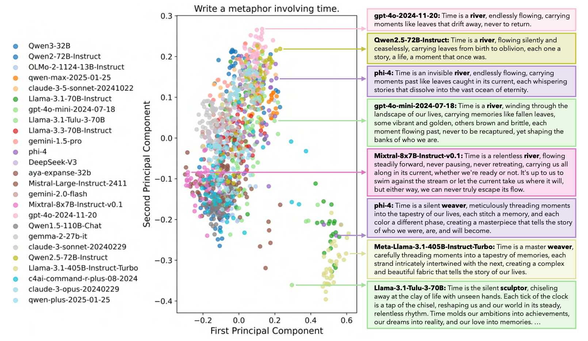

When Alignment Kills Creativity
We were deep into training a creative model. SFT done, reward models built across multiple dimensions of creativity, originality, emotional resonance, narrative structure, and GRPO training underway. The focus had been clear from the start: teach the model what makes creative work actually creative, not just fluent. Score it, reward it, reinforce it.
Then a teammate dropped a paper in our group chat, "Artificial Hivemind: The Open-Ended Homogeneity of Language Models," with a line that made me pause: "The bottleneck is not a lack of capability, but a collapse of creativity. RLHF-aligned general LLMs are architecturally biased against the creative tails of the distribution."
I read the paper. It showed that 70+ current models, across every major family, cluster into two or three output groups on open-ended prompts. Same metaphors, same structures, same safe creative choices.
And that raised a question I hadn't asked before: we'd been focused on making the model more creative, but what if training itself is systematically killing the diversity that creativity requires? What makes us confident ours won't collapse into the same clusters?
I didn't have an answer. So I kept reading.
The paper tested over 26,000 open-ended prompts across 70+ models. When asked to write a metaphor about time, nearly every model, across every family, produced some variation of "time is a river" or "time is a weaver." Not similar responses. Structurally identical ones. GPT, Llama, Qwen, DeepSeek, all arriving at the same place independently.

That was interesting, but what I kept coming back to was a different finding. The paper showed that reward models are miscalibrated on open-ended tasks. At first I wasn't sure what that meant practically. But the more I sat with it, the clearer it became. When two responses are both high quality but creatively different, reward models don't see a tie. They pick a winner. They assign diverging scores to responses that human annotators rate as equally good but simply different. Not randomly either. Systematically. One style gets favoured over another, even when humans collectively say both are fine.
And that got me thinking about our own pipeline. We were using reward models to train through GRPO. If the reward model is the teacher, and the teacher consistently scores one creative direction higher than another even when both are valid, then the model learns to always go that direction. Across millions of examples, that doesn't make the model less capable. It makes it less diverse. The creativity might still be in there somewhere, buried under layers of training that taught it to play safe.
I wasn't sure yet if this was the full picture, but the question had shifted for me. I'd started by asking how to make a model more creative. Now I was asking something different: how do you stop post-training from collapsing the diversity that creativity depends on?
With that question sitting in my head, I started looking into what already existed. Who else had noticed this, and had anyone actually tried to solve it?
That's when I came across three papers, all recent, all connected to each other. Each one referenced the others or built on top of the previous work. And each one tried a different approach to the same problem: how do you train a language model to produce diverse outputs without losing quality?
The first approach I came across was from Meta. DivPO's approach was about data selection. Instead of always picking the highest quality response as the training winner, pick the most diverse high quality response. Pair it against the least diverse low quality one as the loser. The model then learns to prefer outputs that are both good and different.
The results were real. 45% more diverse persona attributes and 74% more diverse stories, without losing quality.
The core insight: the data you train on shapes the output distribution as much as the algorithm does. If every training winner is the safest high-scoring response, the model learns to be safe. If the winners are varied, the model learns to vary.
DivPO also offers an LLM-as-a-judge option for measuring diversity between responses. But this happens during data curation, not during training. They run the judge once, select preference pairs, freeze them, and train with standard DPO. That's an important architectural decision. It makes the LLM judge affordable because it's a one-time cost, but it also means diversity is baked into the data and never updated. As the model evolves during training, what counts as "diverse" shifts, but the frozen pairs can't reflect that.
Follow-up research also pointed out a length bias. The filtering tends to select shorter responses as "diverse" because entropy correlates negatively with length. So the model partly learns to be diverse by being shorter, which isn't the kind of diversity you actually want.
The practical constraint worth noting: DivPO needs to generate around 64 responses per prompt to have a large enough pool for filtering. If your dataset has limited completions per prompt, this approach can't get off the ground.
The second paper, from Midjourney's research team, went a level deeper. Instead of filtering which data the model sees, they modified the loss function itself.
They introduced a deviation score for each training response, measuring how different it is from all other responses to the same prompt using sentence embeddings. That score then multiplies the standard DPO loss. Rare, high quality responses get a louder training signal. Common ones get faded out.
One multiplier on the existing loss. Minimal code change. But their 8B model achieved human-level output diversity while maintaining quality on par with GPT-4o.
The concept of deviation was the real takeaway for me. The idea that you can explicitly tell the training process "learn more from the unusual good outputs, learn less from the typical ones" felt like the right principle regardless of which training algorithm you apply it to.
An important detail: they tried PPO and it failed. The reason matters. PPO requires a reliable reward model that can score outputs in real time during training. For creative tasks, quality is subjective, and the reward model becomes noisy and unreliable. DPO sidesteps this because it learns from pre-labelled preference pairs rather than chasing a live reward signal. If you're working in creative domains, this is a real architectural consideration for choosing between offline and online methods.
They also showed clearly that inference-time fixes don't solve this problem. You can crank temperature up and outputs get incoherent before they get meaningfully diverse. The fix has to happen at the training level.
The limitation: deviation scores are pre-computed and frozen before training starts. The diversity you get is bounded by the diversity that already exists in your training data. The model can't explore beyond what's already there. And computing deviation requires multiple responses per prompt to compare against, which not every dataset has.
The third paper DARLING, Diversity-Aware Reinforcement Learning in Generative Models, brought these ideas into the place where I think they actually belong: online reinforcement learning.
DARLING built directly on top of GRPO. Instead of pre-computing diversity from a static dataset, it computes diversity live during training. At each step, the model generates a group of responses per prompt, and a learned semantic classifier partitions them into equivalence clusters. Not surface-level word differences, but whether two responses are genuinely exploring different directions.
The choice to use a learned classifier instead of embedding distance is deliberate. The Diversified DPO paper measured deviation through sentence embeddings, but embeddings can miss meaningful differences. Two stories with different vocabulary but the same plot would score as "diverse" by embedding distance even though they're creatively identical.
DARLING's classifier is trained to detect semantic equivalence, which is a deeper measure. Though it has its own limitation: the classifier is trained once before RL begins and doesn't update as the model changes, so its notion of "equivalent" stays fixed even as the model's creative range evolves. If a response is unlike most others in the group, it gets a diversity bonus.
The design choice that mattered most: they multiply quality reward by diversity score, not add them.
additive: reward = quality + α × diversity
multiplicative: reward = quality × diversity
This distinction is important. With addition, a very high quality but repetitive response can still get a strong training signal just from its quality score alone. With multiplication, if diversity is near zero, even a perfect quality score gets crushed. The model has to be both good and different. There's no way to game one dimension at the expense of the other.
The result that changed how I was thinking about our own training: diversity didn't trade off against quality. On every benchmark they tested, creative writing and competition math, explicitly optimizing for diversity led to higher quality outputs than quality-only training.
The reason, once I thought about it, made sense. Standard GRPO finds one good response pattern and exploits it. Diversity-aware GRPO is forced to explore different response modes, and in doing so it discovers better solutions that quality-only optimization would never reach because it stopped exploring too early.
What I'm Taking Forward
Each paper left me with something concrete.
- From DivPO: data selection shapes the output distribution as much as the algorithm does. Diversity won't emerge on its own, the training signal has to reward it explicitly. Their LLM-as-a-judge approach for measuring diversity during data curation is practical when used as a one-time process.
- From Diversified DPO: the deviation concept. Amplify the rare high quality outputs, dampen the common ones. Their method pre-computes deviation from a static dataset, but the principle transfers regardless of where deviation is computed.
- From DARLING: compute diversity online inside the GRPO loop, multiply it with quality reward, so the model has to be both good and different. And the finding that diversity actually improves quality through better exploration.
The open question I keep coming back to is how to measure diversity during online training in a way that's accurate, fast, and captures actual creative difference.
- Embedding distance is too shallow. Two responses can be far apart in embedding space but creatively identical.
- A learned classifier is better but trained once and doesn't evolve with the model.
One direction I want to experiment with: if you already have reward models scoring responses across multiple creativity dimensions like originality, emotional resonance, and narrative structure, the distance between those reward profiles within a generated group might itself work as a diversity signal. Two responses with similar profiles are probably doing the same thing. Two with different profiles are creative in different ways.
Whether that captures the right kind of diversity, and whether it holds up inside a live GRPO loop, is what I'm looking to find out next.
My teammate's message started with a claim: the bottleneck is not capability, it's collapse. Four papers later, that framing feels right. And I think the next model to break out of the hivemind won't be the one with the most parameters or the best benchmark scores. It'll be the one trained to be interesting, not agreeable.
References
- Artificial Hivemind: The Open-Ended Homogeneity of Language Models. Jiang et al., NeurIPS 2025 Best Paper.
- DivPO: Diverse Preference Optimization. Lanchantin et al., Meta, January 2025.
- Diversified DPO/ORPO. Chung et al., Midjourney and NYU, March 2025.
- DARLING: Diversity-Aware Reinforcement Learning in Generative Models. Li et al., CMU and Meta, September 2025.